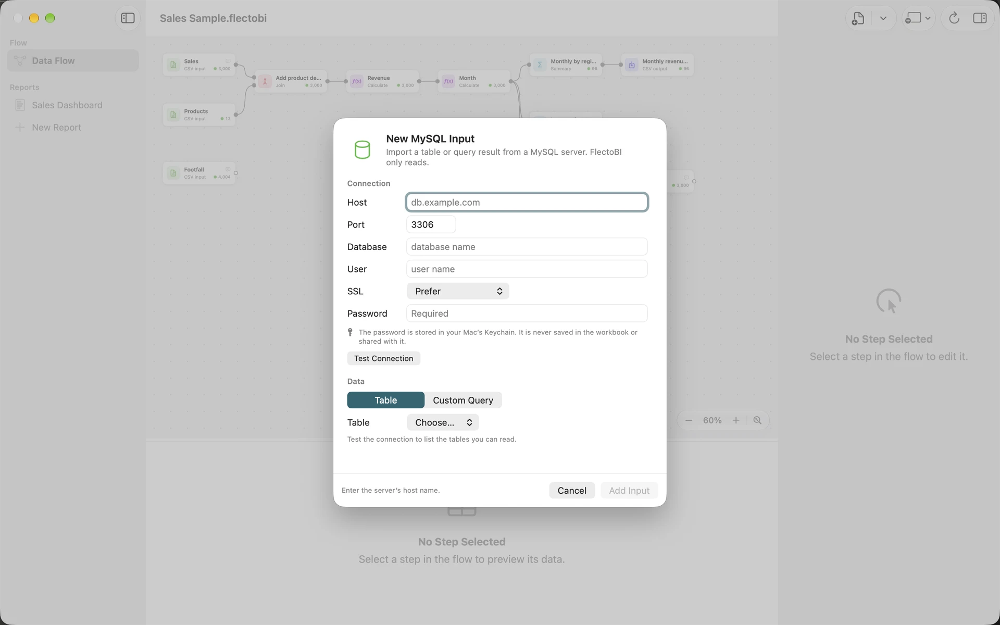
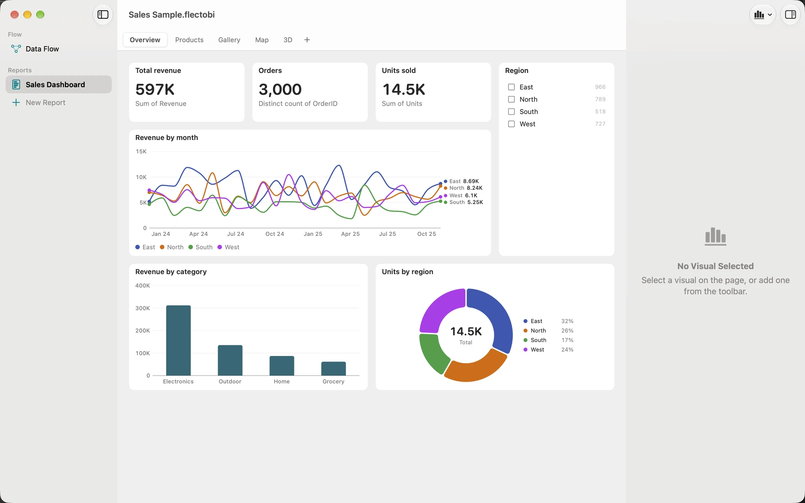
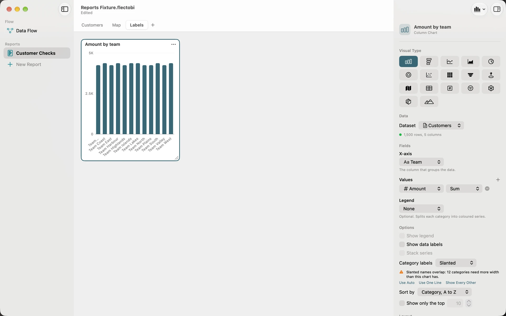

Build a Report from a database
Business data often lives in a database. FlectoBI can read from PostgreSQL and from MySQL, including MariaDB. It only reads. It never writes to your database, and your password stays in your Mac’s Keychain.
Goal: a Report built on a table or a query from a database.
What you need: the host name, the port, the database name, a user name and a password. Ask your administrator for an account that can read the tables you need. An account with read rights only is the safest choice.
Connect
- Click Add Input in the toolbar, and choose New PostgreSQL Input… or New MySQL Input… from its menu. You can also use the Flow menu.
- Fill in the sheet: Host, such as db.example.com. Port, which starts at 5432 for PostgreSQL and 3306 for MySQL. Database. User. SSL, explained below. Password.
- Click Test Connection. On success the sheet says “Connected. N tables and views found.” You can click Cancel while it is connecting.


If something is wrong, the sheet says what, in a sentence. Examples are “Authentication failed. Check the user name and password.”, “The host name could not be found.” and “The server did not respond in time.”
Choose the SSL mode
SSL decides whether the connection is encrypted and whether the server’s identity is checked. The picker offers Off, Prefer, Require and Verify certificate.
- For a server on another machine, use Verify certificate when you can. FlectoBI checks the certificate against the trusted certificates of macOS. A new connection to another machine starts at Require for PostgreSQL and at Verify certificate for MySQL.
- Require encrypts, but does not check who is on the other end. For MySQL, a note under the picker says so.
- Off to another machine lets others read the password and the data on the network. For MySQL, FlectoBI warns you. Choose it only when the server offers nothing else.
- A server on your own Mac is fine on its defaults, because the traffic stays on the Mac.
Where the password goes
The password is saved in the macOS Keychain, for that exact server, port, database and user. It is never saved in the Workbook, so you can send the Workbook to a colleague without sharing it. They are asked for their own password once.
Read a table, or write one SELECT
In the Data section, choose one of two options.
- Table: pick from the list of tables and views. Views are marked.
- Custom Query: write a single query. It runs on the server in a read-only session.
A custom query for MySQL must start with SELECT, WITH, TABLE or VALUES. Use one query only. Remove INTO. One semicolon at the end is allowed. The sheet shows a problem before you add the Input, and a CALL is refused.
For example, to read only this year’s orders you might write a query that selects the order id, date, region and total from the orders table, with a condition on the date. A query that reads less comes back faster, and needs less memory, than a whole table that you then filter.
Click Add Input. FlectoBI copies the result into the engine as a snapshot. The Step is named after the table, or after the database with the word query.
Shape the data
Select the new Input and look at the preview. Then use Transforms as in the other tutorials:
- Change Type, if a Column came in as text but holds dates or numbers.
- Filter, to keep the rows you need.
- Summary, to group by month or region and total the numbers. See Build a monthly sales dashboard.
Doing the heavy filtering in the query is kinder to the server. Doing it in the Flow lets you change your mind without writing SQL.
Build the Report
- Click New Report in the sidebar.
- Click Add Visual and choose Column Chart. Set Dataset to your last Step.
- Put a category in X-axis and a number in Values, such as the Sum of total.
- Add a Card and a Slicer in the same way.

A column chart with many long names can crowd. FlectoBI never hides a name by itself. If the Category labels option you chose cannot fit, a warning under it in the inspector offers Use Auto and Use One Line, and Show Every Other when every other name would fit.

Refresh
A database Input is a snapshot. It does not stay connected.
- Click Refresh in the toolbar, or press Command-R. FlectoBI connects, reads the table or query again and recomputes the Steps. The Report redraws.
- Opening a Workbook does not connect on its own, unless a password for that exact server is already in your Keychain. Without one, the Step waits and asks.
- To change the server or the user, select the Input and edit the form. The inspector shows Unsaved changes until you click Apply.
What you learned
- A database Input is read-only and a snapshot. See Databases.
- The password lives in the Keychain, not the Workbook. See Databases.
- You can shape the result and build a Report as with any Input. See Reports and Pages.